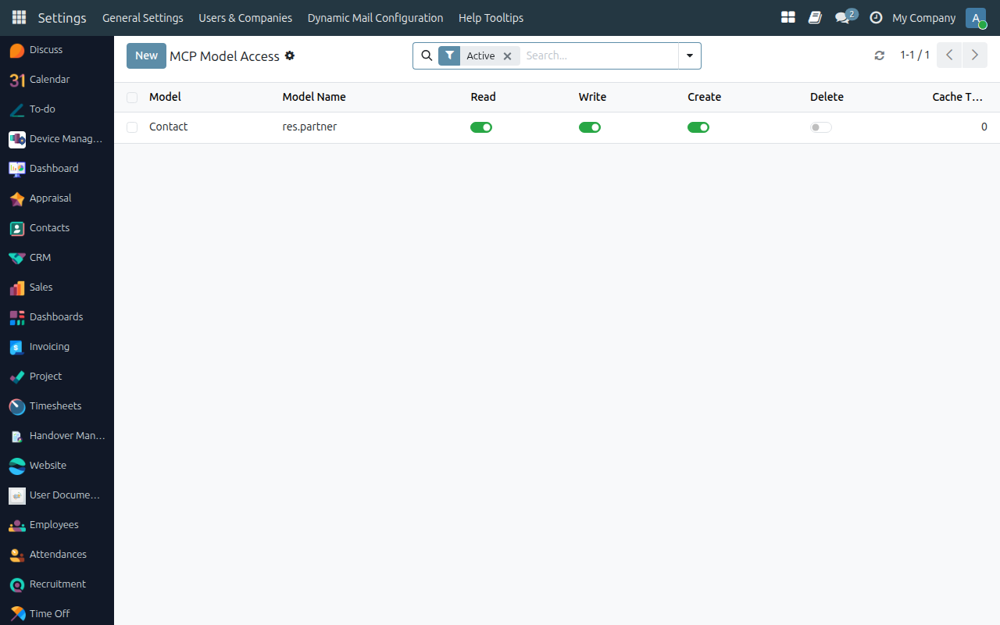
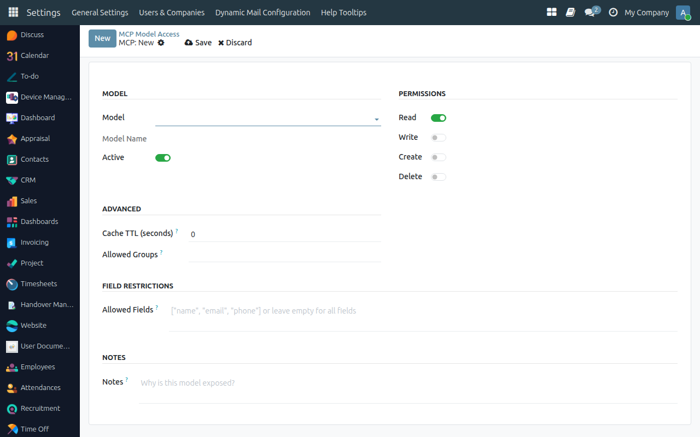
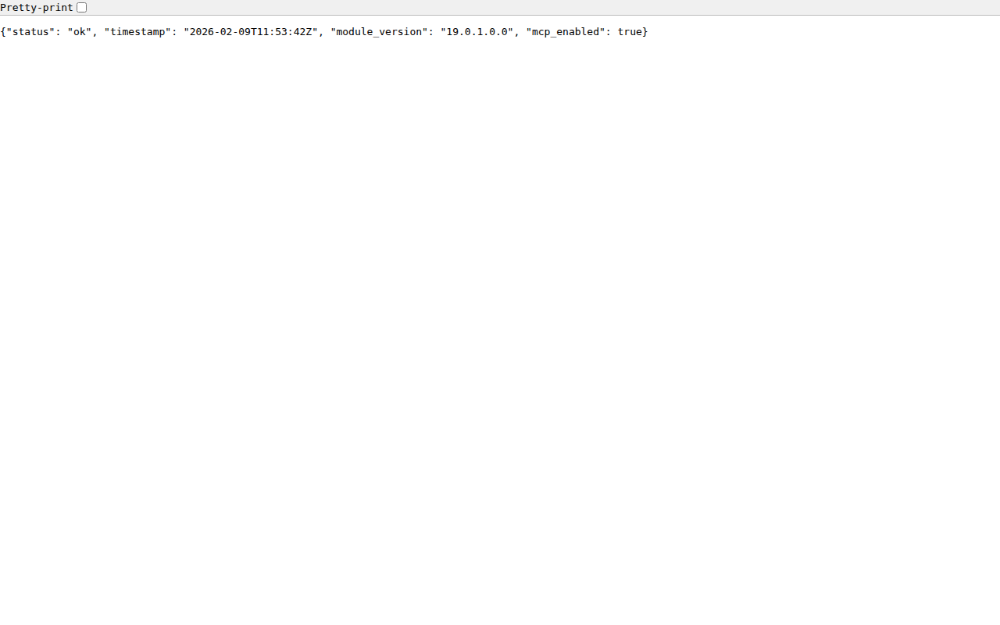

MCP Server Settings

MCP Server is an Odoo 19.0 module that securely connects AI assistants like Claude, Cursor, and VS Code Copilot to your Odoo ERP using the Model Context Protocol (MCP) standard. It provides REST API endpoints and XML-RPC proxy with fine-grained per-model access control, full audit logging, rate limiting, response caching, and LLM-optimized output formatting.
Whether you need AI to read customer data, create sales orders, or analyze inventory — MCP Server ensures every request is authenticated, authorized, logged, and delivered in a format AI assistants understand best.
MCP Server gives you complete control over how AI assistants interact with your Odoo data. With multi-layer authentication, granular permissions, audit logging, and smart caching — you can confidently connect any MCP-compatible AI client to your ERP.
| REST API Endpoints | 13 REST endpoints for search, read, browse, count, create, write, unlink, call method, list models, field metadata, auth validation, health check, and system info. |
|---|---|
| XML-RPC Proxy | 2 XML-RPC endpoints (common + object) that proxy through MCP permission layer. Compatible with standard Odoo XML-RPC clients. |
| Bearer Token Auth | Authenticate using Odoo's native API key system (Bearer Token) or HTTP Basic Auth credentials. API keys are recommended for production. |
| Per-Model Access Control | Expose only the models your AI needs. Toggle Read, Write, Create, Delete permissions independently for each model. |
| Field-Level Restrictions | Optionally specify which fields are allowed per model (JSON list). Hide sensitive columns like passwords, tokens, or financial data. |
| Rate Limiting | Configurable per-minute request limits per user. Returns retry-after headers when exceeded. Set 0 to disable. |
| IP Whitelist | Restrict MCP API access to known IP addresses only. One IP per line in settings. Empty = allow all. |
| Response Caching | Built-in cache with per-model configurable TTL. Speeds up repeated read operations significantly. |
| Audit Logging | Every MCP API call is logged with user, IP, model, operation, status, duration, and user agent. View in list, graph, or pivot. |
| Auto Log Cleanup | Cron job automatically deletes audit logs older than configurable retention period (default 90 days). |
| LLM-Optimized Output | Smart field defaults exclude binary fields, Many2one as {id, name}, selection fields include labels, HTML stripped for clean text. Built-in summary generator. |
| YOLO Mode | Development-only mode that bypasses MCP permission checks. Two levels: "read_only" and "full". Never enable in production. |
| Security Groups | Two security groups: MCP User (basic access) and MCP Administrator (full management). Assign per user. |
| Blocked Models | Security-sensitive models like ir.rule, ir.config_parameter, and res.users.apikeys are automatically blocked from MCP access. |
See how MCP Server works inside Odoo
Configure which Odoo models are accessible via MCP and set individual Read, Write, Create, Delete permissions.

Select a model, toggle CRUD permissions, set allowed fields, cache TTL, and restrict to specific user groups.

Every MCP API request is logged with user, IP, model, operation, status, and response duration.

Visualize API usage patterns with built-in graph and pivot views.

Quick health check endpoint returns server status, version, and MCP enabled state.

| Method | Endpoint | Description |
|---|---|---|
| GET | /mcp/api/v1/health |
Health check with status, version, timestamp |
| GET | /mcp/api/v1/system/info |
Odoo version, database, exposed model count |
| Method | Endpoint | Description |
|---|---|---|
| POST | /mcp/api/v1/auth/validate |
Validate credentials, return user info |
| GET | /mcp/api/v1/models |
List all exposed models with permissions |
| GET | /mcp/api/v1/models/<model>/fields |
Get field metadata for a model |
| POST | /mcp/api/v1/models/<model>/search |
Search records with domain filter |
| POST | /mcp/api/v1/models/<model>/read |
Read specific records by IDs |
| POST | /mcp/api/v1/models/<model>/browse |
Paginated browse with offset/limit |
| POST | /mcp/api/v1/models/<model>/count |
Count records matching domain |
| POST | /mcp/api/v1/models/<model>/create |
Create new record |
| POST | /mcp/api/v1/models/<model>/write |
Update existing records |
| POST | /mcp/api/v1/models/<model>/unlink |
Delete records |
| POST | /mcp/api/v1/models/<model>/call |
Call arbitrary model method |
| Endpoint | Methods |
|---|---|
/mcp/xmlrpc/2/common |
version(), authenticate() |
/mcp/xmlrpc/2/object |
execute_kw() |
Search Partners (curl):
curl -X POST http://localhost:8069/mcp/api/v1/models/res-partner/search \
-H "Authorization: Bearer YOUR_API_KEY" \
-H "Content-Type: application/json" \
-d '{"domain": [["is_company", "=", true]], "fields": ["name", "email"], "limit": 5}'Note: Use dashes (res-partner) instead of dots (res.partner) in URL paths.
Create a Record (curl):
curl -X POST http://localhost:8069/mcp/api/v1/models/res-partner/create \
-H "Authorization: Bearer YOUR_API_KEY" \
-H "Content-Type: application/json" \
-d '{"values": {"name": "New Partner", "email": "new@example.com", "is_company": true}}'Connect your favorite AI assistant to Odoo using the included MCP Bridge script
Install dependencies first: pip install "mcp[cli]" httpx
Create .vscode/mcp.json in your workspace:
{
"servers": {
"odoo": {
"command": "python3",
"args": ["/path/to/mcp_server_ai/mcp_bridge.py"],
"env": {
"ODOO_URL": "http://localhost:8069",
"ODOO_API_KEY": "your-api-key-here",
"ODOO_DB": "your-database-name"
}
}
}
}Config: ~/.config/claude/claude_desktop_config.json
{
"mcpServers": {
"odoo": {
"command": "python3",
"args": ["/path/to/mcp_server_ai/mcp_bridge.py"],
"env": {
"ODOO_URL": "http://localhost:8069",
"ODOO_API_KEY": "your-api-key-here",
"ODOO_DB": "your-database-name"
}
}
}
}Run in your terminal:
claude mcp add-json odoo '{
"command": "python3",
"args": ["/path/to/mcp_server_ai/mcp_bridge.py"],
"env": {
"ODOO_URL": "http://localhost:8069",
"ODOO_API_KEY": "your-api-key-here",
"ODOO_DB": "your-database-name"
}
}' -s userConfig: ~/.cursor/mcp.json
{
"mcpServers": {
"odoo": {
"command": "python3",
"args": ["/path/to/mcp_server_ai/mcp_bridge.py"],
"env": {
"ODOO_URL": "http://localhost:8069",
"ODOO_API_KEY": "your-api-key-here",
"ODOO_DB": "your-database-name"
}
}
}
}Replace /path/to/mcp_server_ai/mcp_bridge.py with the actual full path. ODOO_DB is required for multi-database servers.
MCP Server is an Odoo module that implements the Model Context Protocol standard, allowing AI assistants like Claude, Cursor, and VS Code Copilot to securely read and write Odoo data through REST API and XML-RPC endpoints.
Any AI client that supports the MCP standard can connect, including Claude Desktop, Claude Code CLI, VS Code Copilot, and Cursor IDE. The module includes a bridge script (mcp_bridge.py) that handles the protocol translation.
You can use either Bearer Token authentication (using Odoo's native API key system) or HTTP Basic Auth (login:password). API keys are recommended for production — generate them in Settings > Users > API Keys tab.
Yes — the module includes multiple security layers: Bearer token auth, IP whitelisting, per-user rate limiting, per-model CRUD permissions, field-level restrictions, blocked security-sensitive models, and complete audit logging. Just make sure YOLO mode is disabled and you use HTTPS.
YOLO mode is a development-only feature that bypasses MCP permission checks. It has two levels: "read_only" (skips permissions for read operations) and "full" (skips all permissions). Never enable it in production environments.
Use dashes instead of dots in URL paths. For example, use res-partner instead of res.partner. The API automatically converts dashes back to dots internally.
Having trouble? Our dedicated support team is ready to help you resolve any issues quickly.